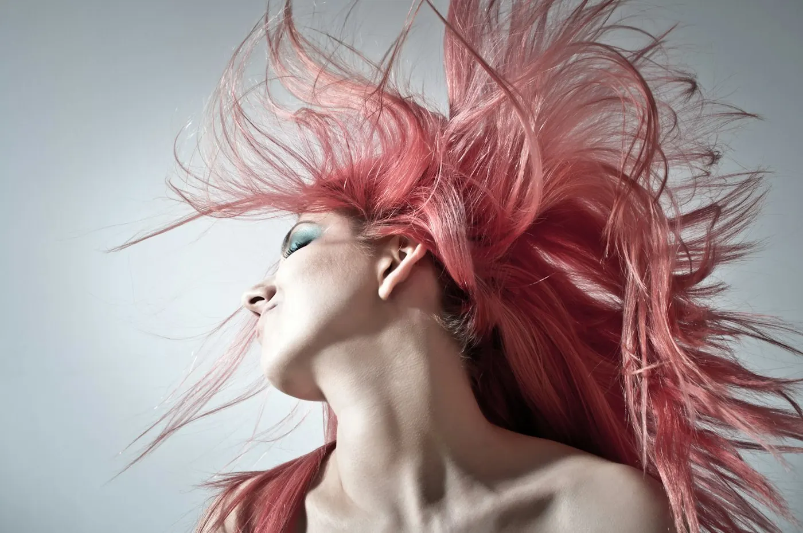
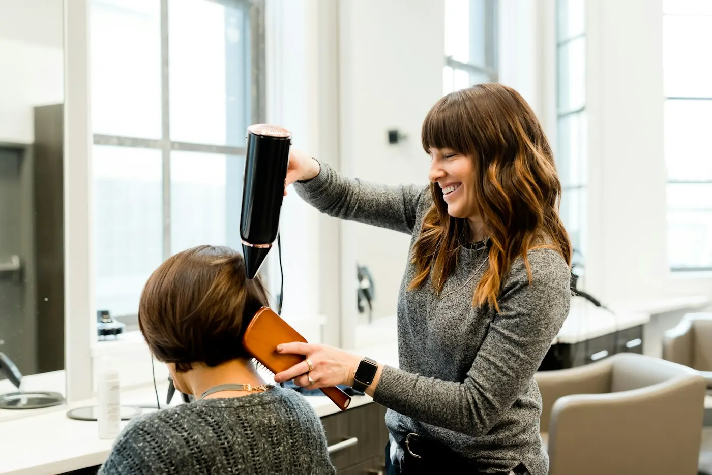

One Hair Salon
位於台中市北區青島西街，對外公開以燙髮與霧感髮色為主要服務方向。
週一至週六 11:00–20:00 · 週日 11:00–18:00 · 近中清文心捷運站

弌髮廊位於台中市北區青島西街 79 號，近中清文心捷運站。官方介紹以專業燙髮與霧感髮色為主要服務方向，也提供剪髮等一般美髮服務。
建議先以電話或官方 LINE 預約，並說明想做的項目與方便的時段。實際可做的造型與所需時間，會依髮況在現場溝通後決定。
店內接受現金、信用卡與 LINE Pay。出發前若時間有變，也請再與沙龍確認一次。
以下依沙龍對外說明整理。個別項目是否適合、以及實際做法，都需先了解髮況後再決定。
沙龍對外強調的主要服務之一。適合的燙法與所需時間，請於預約或到店時再確認。
以霧感方向的染髮為公開服務重點。是否需要漂色或其他前置，需視現有髮色與髮質評估。
一般剪髮與吹整。到店後可先說明平時的整理習慣與想調整的地方。
以下為一般美髮沙龍常見的預約步驟，實際安排請依現場說明為準。
請打電話或透過官方 LINE 預約，並說明想做的項目與方便時段。
請依約定時間到店。若會遲到或需要改期，請盡早告知。
到店後會先了解目前髮質、過往燙染紀錄，以及這次想調整的方向。
服務結束後如需保養建議，可再詢問。下次預約也可透過電話或 LINE 安排。
以下整理自沙龍公開資訊，臨時異動請以電話或官方 LINE 確認。
| 一 | 二 | 三 | 四 | 五 | 六 | 日 | |
|---|---|---|---|---|---|---|---|
| 營業 | 11:00–20:00 | 11:00–20:00 | 11:00–20:00 | 11:00–20:00 | 11:00–20:00 | 11:00–20:00 | 11:00–18:00 |
以下為氣氛示意照片，不是店內實景。實際空間請以現場為準。

請撥打 04-2293-6878，或加入官方 LINE @has0100x 留言預約，並說明想做的項目。
有，週日營業時間為 11:00–18:00，比平日提早結束。週一至週六為 11:00–20:00。
地址是台中市北區青島西街 79 號，近中清文心捷運站。詳細位置可見下方地圖。
建議先預約。尤其是燙髮或染髮通常較費時，先約好比較不會白跑一趟。
依公開資訊，店內可使用現金、信用卡與 LINE Pay。若有其他付款需求，請先向沙龍確認。